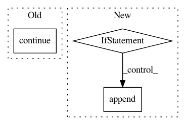

795c63dc3a97110bebca0e22af250ad9f1d48c20,pybulletgym/envs/mujoco/robot_bases.py,XmlBasedRobot,addToScene,#XmlBasedRobot#,32
Before Change
if joint_name[:6] == "ignore":
Joint(self._p, joint_name, bodies, i, j).disable_motor()
continue
if joint_name[:8] != "jointfix":
joints[joint_name] = Joint(self._p, joint_name, bodies, i, j)
ordered_joints.append(joints[joint_name])
After Change
if joint_name[:6] == "ignore":
ignored_joint = Joint(self._p, joint_name, bodies, i, j)
ignored_joint.disable_motor()
if self.add_ignored_joints: // some of the robots (Hopper, Walker2D and HalfCheetah in mujoco) require read-access to these joints
joints[joint_name] = ignored_joint
ordered_joints.append(ignored_joint)
joints[joint_name].power_coef = 0.0
continue
if joint_name[:8] != "jointfix":
joints[joint_name] = Joint(self._p, joint_name, bodies, i, j)
In pattern: SUPERPATTERN
Frequency: 3
Non-data size: 3
Instances
Project Name: benelot/pybullet-gym
Commit Name: 795c63dc3a97110bebca0e22af250ad9f1d48c20
Time: 2018-10-08
Author: be.ellenberger@gmail.com
File Name: pybulletgym/envs/mujoco/robot_bases.py
Class Name: XmlBasedRobot
Method Name: addToScene
Project Name: pyinstaller/pyinstaller
Commit Name: 09a68eb00215859005835514a5d04b01f936ed1d
Time: 2020-10-18
Author: h.goebel@crazy-compilers.com
File Name: PyInstaller/depend/analysis.py
Class Name: PyiModuleGraph
Method Name: _make_toc
Project Name: nerox8664/pytorch2keras
Commit Name: 1cf4c73059ba4435f37a93a316edbd426263cbf0
Time: 2018-12-20
Author: nerox8664@gmail.com
File Name: pytorch2keras/converter.py
Class Name:
Method Name: pytorch_to_keras